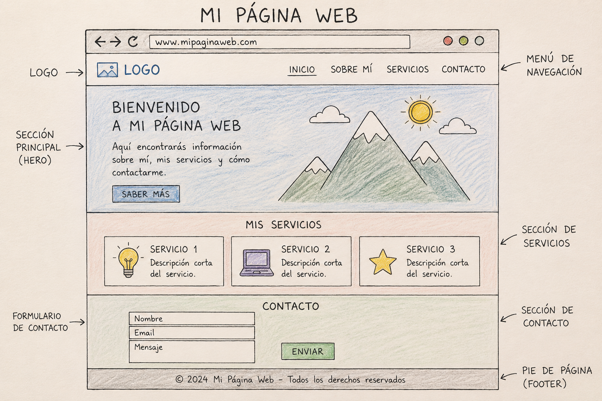

Sobre este proyecto
Esta web forma parte de mi aprendizaje de HTML, CSS y JavaScript. Conforme vaya aprendiendo nuevas tecnologías, iré incorporándolas aquí.
Puedes ver el código fuente del proyecto en mi repositorio de GitHub .

Esta web forma parte de mi aprendizaje de HTML, CSS y JavaScript. Conforme vaya aprendiendo nuevas tecnologías, iré incorporándolas aquí.
Puedes ver el código fuente del proyecto en mi repositorio de GitHub .
Qué obediente, has pulsado el botón. Gracias, bebé 😊